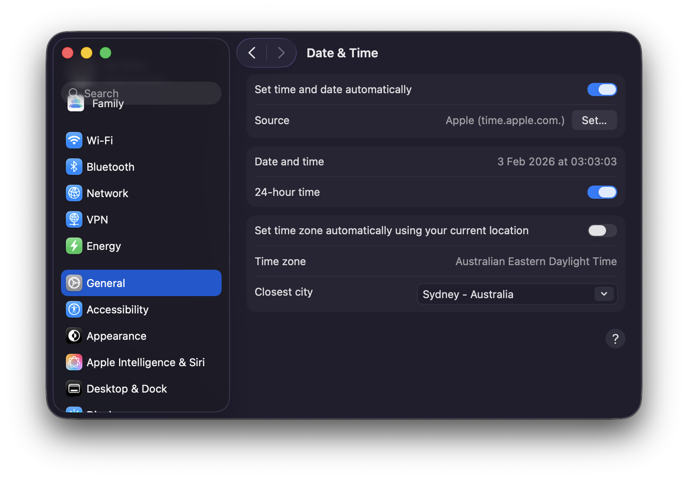
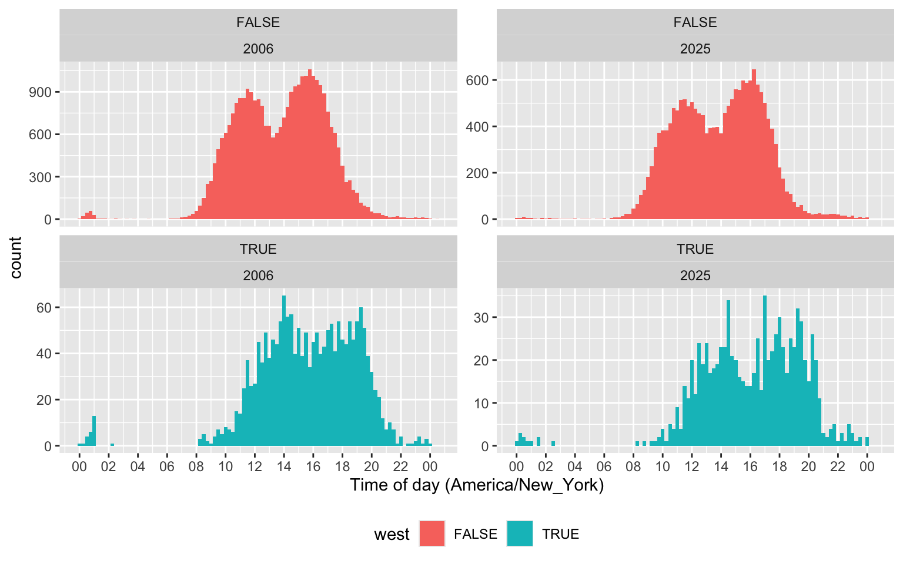
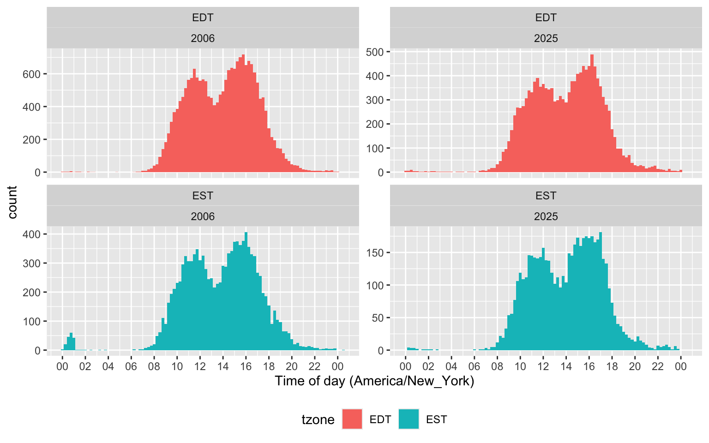
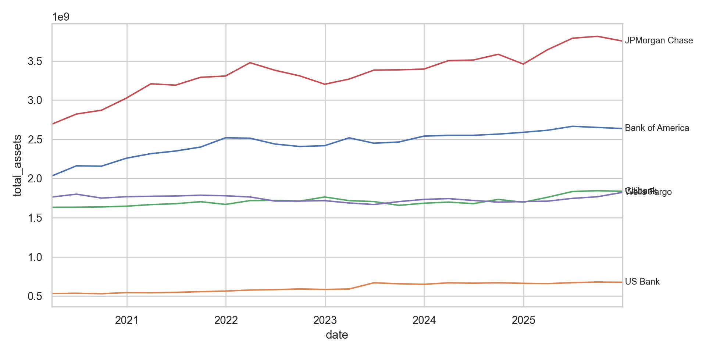

![]()

Data curation: The case of Call Reports
Data curation
Polars
DuckDB
Keywords
Python, Polars
I recently (Gow, 2026) proposed an extension to the data science “whole game” of R for Data Science (Wickham et al., 2023). In Gow (2026), I used Australian stock price data to illustrate the data curation process and, in this note, I use US bank “Call Report” data as a second illustration. In effect, I provide complete instructions for building a high-performance data library covering all Call Reports data provided by the FFIEC Bulk Data website that can be constructed in less than ten minutes on fast hardware (or a couple of hours on an older machine). I also give a few brief demonstrations of how to use the curated data, with examples for both R and Python. I conclude by discussing challenges encountered during processing and offering some observations about AI and data curation.
My extension of the data science “whole game”—depicted in Figure 1 below—adds a persist step to the original version, groups it with import and tidy into a single process, which I call Curate. As a complement to the new persist step, I also add a load step to the Understand process.1
In this note, as in Gow (2026), I focus on the data curation (Curate) process. My rationale for separating Curate from Understand is that I believe that thinking about these separately clarifies certain best practices in the curation of data. In Gow (2026), I used the notion of a service-level agreement to explain how the two processes can be delineated. My conception of Curate (Gow, 2026) encompasses some tasks that are included in the transform step (part of the Understand process) of Wickham et al. (2023).
While I will argue that even the sole analyst who will perform all three processes can benefit from thinking about Curate separate from Understand, it is perhaps easiest to conceive of the Curate and Understand processes as involving different individuals or organizational units of the “whole game” of a data analysis workflow. In Gow (2026), I used the idea of a service-level agreement to delineate the division of responsibilities between the Curate and Understand teams. In effect, I will act as a self-appointed, single-person, unpaid Curate team and I imagine potential users of call report data as my Understand clients.
Tip
This note was written and rendered with Quarto using RStudio, an integrated development environment (IDE) for working with R. The source code for this note is available here and the latest PDF version is available here.
In writing the R portions of this note, I used the packages listed below.2
I have not submitted ffiec.pq to CRAN. To install ffiec.pq, first install the pak package using install.packages("pak").3 Then, use pak to install ffiec.pq by typing pak::pak("iangow/ffiec.pq") in the R console.
library(ffiec.pq)
library(tidyverse)
library(farr)
library(dbplyr)
library(DBI)For the Python portion of this note, I believe that you need polars, pandas, and ffiec_data_collector (if you use Python to get the zip files). In generating some plots, I use seaborn and matplotlib, but I don’t include the associated code for reasons of space. So pip install polars pandas ffiec_data_collector probably suffices.
1 Call Reports
According to its website, the Federal Financial Institutions Examination Council (FFIEC) “is an interagency body … focused on promoting consistency in examination activities [related to United States financial institutions].” The FFIEC “does not regulate financial institutions [and its] jurisdiction is limited to prescribing uniform principles, standards, and report forms for the federal examination of financial institutions and making recommendations to promote uniformity in the supervision of financial institutions.”
One of the services provided by the FFIEC is its “Central Data Repository’s Public Data Distribution website. Through this site you can obtain Reports of Condition and Income (Call Reports) for most FDIC-insured institutions. The information available on this site is updated to reflect the most recent data for both prior and current periods. The earliest data provided is from March 31, 2001.”
Many academic studies use Call Report data. For example, Kashyap et al. (2002, p. 52) states “our data come from the ‘Call Reports,’ the regulatory filings that all commercial banks having insured deposits submit each quarter. The Call Reports include detailed information on the composition of bank balance sheets and some additional data on off-balance-sheet items. These data are reported at the level of the individual bank.”
While raw data are offered by the FFIEC, some work is required to arrange the data into a form amenable to further analysis. In other words, some curation of the data is required.
Several commercial data providers offer the FFIEC data in a curated form, but accessing those requires an institutional or individual subscription. It appears that the Federal Reserve Bank of Chicago once provided a curated data set on its website, but no longer does so. WRDS provides Call Report data extracted from the same sources I used as part of its basic subscription. Of course, no commercial providers of the data provide the source code used to transform the raw data into the form they deliver it in.
Other services provide “API wrappers” that allow users to access the data via the FFIEC API, but this approach is best suited to real-time feeds of small amounts of data. Collation of the data into a single local, comprehensive repository using this approach seems impractical given the scale of the data.
Regardless of the availability of paid curation services, in this note I will imagine that such sources either do not exist or are unavailable to my hypothetical Understand clients and illustrate how one can curate Call Reports data from the FFIEC source.
1.1 Getting the raw data
The FFIEC Bulk Data Download site provides the Call Report data in two forms. The first is as zipped tab-delimited data files, one for each quarter. The second is as zipped XBRL data files, one for each quarter. At the time of writing, the standard approach to getting the complete data archive amounts to pointing and clicking to download each of the roughly 100 files for each format.4
The FFIEC data sets are not as amenable to automated downloading as those offered by other government agencies such as the SEC (see my earlier note on XBRL data), the PCAOB (see my note on Form AP data), or even the Federal Reserve itself (I used data from the MDRM site in preparing this note). However, a group of individuals has contributed the Python package ffiec_data_collector that we can use to collect the data.5
To install this Python package, you first need to install Python and then install the ffiec_data_collector using a command like pip install ffiec_data_collector.
As discussed in Appendix E of Gow and Ding (2024), I organize my raw and processed data in a repository comprising a single parent directory and several sub-directories corresponding to various data sources and projects. For some data sets, this approach to organization facilitates switching code from using (say) data sources provided by Wharton Research Data Services (WRDS) to using local data in my data repository. I will adopt that approach for the purposes of this note.
As the location of my “raw data” repository is found in the the environment variable RAW_DATA_DIR, I can identify that location in Python easily. The following code specifies the download directory as the directory ffiec within my raw data repository.6
import os
from pathlib import Path
print(os.environ['RAW_DATA_DIR'])/Users/igow/Dropbox/raw_datadownload_dir = Path(os.environ['RAW_DATA_DIR']) / "ffiec"Having specified a location to put the downloaded files, it is a simple matter to adapt a script provided on the package website to download the raw data files.
import ffiec_data_collector as fdc
import time
downloader = fdc.FFIECDownloader(download_dir=download_dir)
periods = downloader.select_product(fdc.Product.CALL_SINGLE)
results = []
for period in periods[:4]:
print(f"Downloading {period.yyyymmdd}...", end=" ")
result = downloader.download(
product=fdc.Product.CALL_SINGLE,
period=period.yyyymmdd,
format=fdc.FileFormat.TSV
)
results.append(result)
if result.success:
print(f"✓ ({result.size_bytes:,} bytes)")
else:
print(f"✗ Failed: {result.error_message}")
# IMPORTANT: Be respectful to government servers
# Add delay between requests to avoid overloading the server
time.sleep(1) # 1 second delay - adjust as neededDownloading 20251231... ✓ (6,402,952 bytes)
Downloading 20250930... ✓ (5,687,172 bytes)
Downloading 20250630... ✓ (6,231,175 bytes)
Downloading 20250331... ✓ (5,704,772 bytes)# Summary
successful = sum(1 for r in results if r.success)
print(f"\nCompleted: {successful}/{len(results)} downloads")
Completed: 4/4 downloadsNote that the code above downloads just the most recent four files available on the site. Remove [:4] from the line for period in periods[:4]: to download all files. Note that the package website recommends using time.sleep(5) in place of time.sleep(1) to create a five-second delay and this may be a more appropriate choice if you are downloading all 99 files using this code. Note that the downloaded files occupy about 800 MB of disk space, so make sure you have that available if running this code.
1.1.1 XBRL files
While this note does not use the XBRL files, you can download them using ffiec_data_collector by simply replacing TSV with XBRL in the code above. These zip files are larger than the TSV zip files, occupying about 6 GB of disk space. The ffiec.pq package does offer some rudimentary ability to process these files, but working with them is slow. To illustrate I process just one XBRL zip file.
zipfiles <- ffiec_list_zips(type = "xbrl")
ffiec_process_xbrls(zipfiles$zipfile[1]) |> system_time() user system elapsed
190.595 69.567 261.233 # A tibble: 1 × 4
zipfile date_raw date parquet
<chr> <chr> <date> <chr>
1 FFIEC CDR Call Bulk XBRL 03312001.zip 20010331 2001-03-31 xbrl_20010331.parqu…1.2 Processing the data
With the raw data files in hand, the next task is to process these into files useful for analysis. For reasons I will discuss below, I will process the data into Parquet files. The Parquet format is described in R for Data Science (Wickham et al., 2023, p. 393) as “an open standards-based format widely used by big data systems.” Parquet files provide a format optimized for data analysis, with a rich type system. More details on the Parquet format can be found in Chapter 22 of Wickham et al. (2023) and every code example in Gow and Ding (2024) can be executed against Parquet data files created using my db2pq Python package as described in Appendix E of that book.
The easiest way to run the code I used to process the data is to install the ffiec.pq R package I have made available on GitHub. And the easiest way to use the package is to set the locations for the downloaded raw data files from above and for the processed data using the environment variables RAW_DATA_DIR and DATA_DIR, respectively. By default, the ffiec.pq package assumes that the raw data files can be found in a directory ffiec that is a subdirectory of RAW_DATA_DIR. Also, the ffiec.pq package will place the processed data it creates in a directory ffiec that is a subdirectory of DATA_DIR.
I already have these environment variables set:
Sys.getenv("RAW_DATA_DIR")[1] "/Users/igow/Dropbox/raw_data"Sys.getenv("DATA_DIR")[1] "/Users/igow/Dropbox/pq_data"But, even if I did not, I could set them within R using commands like the following. You should set RAW_DATA_DIR to match what you used above in Python and you should set DATA_DIR to point to the location where you want to put the processed files. The processed files will occupy about 3 GB of disk space, so make sure you have room for these there.
Sys.setenv(RAW_DATA_DIR="/Users/igow/Dropbox/raw_data")
Sys.setenv(DATA_DIR="/Users/igow/Dropbox/pq_data")Having set these environment variables, I can load my package and run a single command ffiec_process() without any arguments to process all the raw data files.7 This takes about five minutes to run (for me):
results <- ffiec_process(use_multicore = TRUE) |> system_time() user system elapsed
7.297 2.181 200.868 Note that, behind the scenes, the ffiec_process() extracts the data in two phases. In the first phase, it processes the data for each schedule for each quarter into Parquet file. This results in 3713 Parquet files. In the second phase, ffiec_process() proceeds to organize the data in the 3713 Parquet files by variable type to facilitate working with the data. Once the data have been organized, the 3713 schedule-and-quarter-specific Parquet files are discarded.
The results table returned by the ffiec_process() function above reflects the outcome of the first phase, as that is when any problems arising from malformed data are expected to arise. If there were any issues in reading the data for a schedule in a quarter, then the variable ok for the corresponding row of results will be FALSE. We can easily confirm that all rows have ok equal to TRUE:
results |> count(ok)# A tibble: 1 × 2
ok n
<lgl> <int>
1 TRUE 3713The results table also includes the field repairs that we can inspect to determine if any “repairs” were made to the data as it was processed in the first phase. As can be seen, a minority of the 3713 first-phase files needed repairs. I discuss these repairs in more detail in Section 3.1.1.
results |>
unnest(repairs) |>
count(repairs)# A tibble: 2 × 2
repairs n
<chr> <int>
1 newline-gsub 102
2 tab-repair 22 Using the data
2.1 Using the data with R
So what has the ffiec.pq package just done? In a nutshell, it have processed each of the nearly 100 zip files into seven Parquet files, and I discuss these in turn.
2.1.1 “Panel of Reporters” (POR) data
The first file is the “Panel of Reporters” (POR) table, which provides details on the financial institutions filing in the respective quarter.
To access the data using the ffiec.pq functions, we just need to create a connection to an in-memory DuckDB database, which is a simple one-liner.
db <- dbConnect(duckdb::duckdb())From there we have the option to load a single Parquet file using the pq_file argument of the ffiec_scan_pqs() function:8
por_20250930 <- ffiec_scan_pqs(db, pq_file="por_20250930.parquet")
por_20250930 |>
select(IDRSSD, financial_institution_name, everything()) |>
head() |>
collect()# A tibble: 6 × 13
IDRSSD financial_institution_name fdic_certificate_num…¹ occ_charter_number
<int> <chr> <chr> <chr>
1 37 BANK OF HANCOCK COUNTY 10057 <NA>
2 242 FIRST COMMUNITY BANK XENIA-F… 3850 <NA>
3 279 BROADSTREET BANK, SSB 28868 <NA>
4 354 BISON STATE BANK 14083 <NA>
5 457 LOWRY STATE BANK 10202 <NA>
6 505 BALLSTON SPA NATIONAL BANK 6959 1253
# ℹ abbreviated name: ¹fdic_certificate_number
# ℹ 9 more variables: ots_docket_number <chr>,
# primary_aba_routing_number <chr>, financial_institution_address <chr>,
# financial_institution_city <chr>, financial_institution_state <chr>,
# financial_institution_zip_code <chr>,
# financial_institution_filing_type <chr>,
# last_date_time_submission_updated_on <dttm>, date <date>por_20250930 |> count() |> collect()# A tibble: 1 × 1
n
<dbl>
1 4435But it will generally be more convenient to just read all files in one step, which we can do like this.
por <- ffiec_scan_pqs(db, "por")
por |>
select(IDRSSD, financial_institution_name, everything()) |>
head() |>
collect() # A tibble: 6 × 13
IDRSSD financial_institution_name fdic_certificate_num…¹ occ_charter_number
<int> <chr> <chr> <chr>
1 37 BANK OF HANCOCK COUNTY 10057 <NA>
2 242 FIRST NATIONAL BANK OF XENIA… 3850 12096
3 279 MINEOLA COMMUNITY BANK, SSB 28868 <NA>
4 354 BISON STATE BANK 14083 <NA>
5 439 PEOPLES BANK 16498 <NA>
6 457 LOWRY STATE BANK 10202 <NA>
# ℹ abbreviated name: ¹fdic_certificate_number
# ℹ 9 more variables: ots_docket_number <chr>,
# primary_aba_routing_number <chr>, financial_institution_address <chr>,
# financial_institution_city <chr>, financial_institution_state <chr>,
# financial_institution_zip_code <chr>,
# financial_institution_filing_type <chr>,
# last_date_time_submission_updated_on <dttm>, date <date>por |> count() |> collect()# A tibble: 1 × 1
n
<dbl>
1 6623632.1.2 Item-schedules data
The second data set is ffiec_schedules. The zip files provided by the FFIEC Bulk Data site comprise several TSV files organized into “schedules” corresponding the particular forms on which the data are submitted by filers. While the ffiec.pq package reorganizes the data by data type, information about the original source files for the data are retained in ffiec_schedules. We can load this using the following code:
ffiec_schedules <- ffiec_scan_pqs(db, "ffiec_schedules")And here are the first 10 rows of this data set.
ffiec_schedules |> head(10) |> collect()# A tibble: 10 × 3
item schedule date
<chr> <list> <date>
1 RCFD0010 <chr [2]> 2001-03-31
2 RCFD0022 <chr [1]> 2001-03-31
3 RCFD0071 <chr [1]> 2001-03-31
4 RCFD0073 <chr [1]> 2001-03-31
5 RCFD0074 <chr [1]> 2001-03-31
6 RCFD0081 <chr [1]> 2001-03-31
7 RCFD0083 <chr [1]> 2001-03-31
8 RCFD0085 <chr [1]> 2001-03-31
9 RCFD0090 <chr [1]> 2001-03-31
10 RCFD0211 <chr [1]> 2001-03-31Focusing on one item, RIAD4230, we can see from the output below that this item was provided on both Schedule RI (ri) and Schedule RI-BII (ribii) from 2001-03-31 until 2018-12-31, but since then has only been provided on Schedule RI-BII.
ffiec_schedules |>
filter(item == "RIAD4230") |>
mutate(schedule = unnest(schedule)) |>
group_by(item, schedule) |>
summarize(min_date = min(date, na.rm = TRUE),
max_date = max(date, na.rm = TRUE),
.groups = "drop") |>
collect()# A tibble: 2 × 4
item schedule min_date max_date
<chr> <chr> <date> <date>
1 RIAD4230 ri 2001-03-31 2018-12-31
2 RIAD4230 ribii 2001-03-31 2025-12-31The next question might be: What is RIAD4230? We can get the answer from ffiec_items, a data set included with the ffiec.pq package:
ffiec_items |> filter(item == "RIAD4230")# A tibble: 1 × 5
item mnemonic item_code item_name data_type
<chr> <chr> <chr> <chr> <chr>
1 RIAD4230 RIAD 4230 Provision for loan and lease losses Float64 Schedule RI is the income statement and “Provision for loan and lease losses” is an expense we would expect to see there for a financial institution. Schedule RI-BII is “Charge-offs and Recoveries on Loans and Leases” and provides detail on loan charge-offs and recoveries, broken out by loan category, for the reporting period. As part of processing the data, the ffiec.pq package confirms that the value for any given item for a specific IDRSSD and date is the same across schedules for all items in the data.
Each of the other five files represents data from the schedules for that quarter for a particular data type, as shown in Table 1:
| Key | Arrow type | Access code |
|---|---|---|
| float | Float64 | ffiec_scan_pqs(db, "ffiec_float") |
| int | Int32 | ffiec_scan_pqs(db, "ffiec_int") |
| str | Utf8 | ffiec_scan_pqs(db, "ffiec_str") |
| date | Date32 | ffiec_scan_pqs(db, "ffiec_date") |
| bool | Boolean | ffiec_scan_pqs(db, "ffiec_bool") |
We can use the data set ffiec_items to find out where a variable is located, based on its Arrow type.
ffiec_items# A tibble: 5,141 × 5
item mnemonic item_code item_name data_type
<chr> <chr> <chr> <chr> <chr>
1 RCFA2170 RCFA 2170 Total assets Float64
2 RCFA3128 RCFA 3128 Allocated transfer risk reserves Float64
3 RCFA3792 RCFA 3792 Total qualifying capital allowable und… Float64
4 RCFA5310 RCFA 5310 General loan and lease valuation allow… Float64
5 RCFA5311 RCFA 5311 Tier 2 (supplementary) capital Float64
6 RCFA7204 RCFA 7204 Tier 1 leverage capital ratio Float64
7 RCFA7205 RCFA 7205 Total risk-based capital ratio Float64
8 RCFA7206 RCFA 7206 Tier 1 risk-based capital ratio Float64
9 RCFA8274 RCFA 8274 Tier 1 capital allowable under the ris… Float64
10 RCFAA223 RCFA A223 Risk-weighted assets (net of allowance… Float64
# ℹ 5,131 more rowsAs might be expected, most variables have type Float64 and will be found in the ffiec_float tables.
ffiec_items |> count(data_type, sort = TRUE)# A tibble: 5 × 2
data_type n
<chr> <int>
1 Float64 4909
2 Int32 115
3 String 73
4 Boolean 42
5 Date32 22.1.3 Example 1: Do bank balance sheets balance?
If we were experts in Call Report data, we might know that domestic total assets is reported as item RCFD2170 (on Schedule RC) for banks reporting on a consolidated basis and as item RCON2170 for banks reporting on an unconsolidated basis. We might also know about RCFD2948 and RCFD3210 and so on. But we don’t need to be experts to see what these items relate to:
bs_items <- c("RCFD2170", "RCON2170",
"RCFD2948", "RCON2948",
"RCFD3210", "RCON3210",
"RCFD3000", "RCON3000")
ffiec_items |> filter(item %in% bs_items)# A tibble: 8 × 5
item mnemonic item_code item_name data_type
<chr> <chr> <chr> <chr> <chr>
1 RCFD2170 RCFD 2170 Total assets Float64
2 RCFD2948 RCFD 2948 Total liabilities and minority interest Float64
3 RCFD3000 RCFD 3000 Minority interest in consolidated subsi… Float64
4 RCFD3210 RCFD 3210 Total equity capital Float64
5 RCON2170 RCON 2170 Total assets Float64
6 RCON2948 RCON 2948 Total liabilities and minority interest Float64
7 RCON3000 RCON 3000 Minority interest in consolidated subsi… Float64
8 RCON3210 RCON 3210 Total equity capital Float64 The output above suggests we can make a “top level” balance sheet table using these items. The following code uses the DuckDB instance we created above (db) and the code provided in Table 1, to create ffiec_float, a “lazy” data table. Here “lazy” is a good thing, as it means we have access to all the data without having to load anything into RAM. As a result, this operation takes almost no time.
ffiec_float <- ffiec_scan_pqs(db, "ffiec_float") |> system_time() user system elapsed
0.036 0.016 0.015 ffiec_float# A query: ?? x 4
# Database: DuckDB 1.4.4 [igow@Darwin 25.4.0:R 4.5.2/:memory:]
IDRSSD date item value
<int> <date> <chr> <dbl>
1 37 2001-03-31 RCON3562 0
2 37 2001-03-31 RCON7701 0
3 37 2001-03-31 RCON7702 0
4 242 2001-03-31 RCON3562 329
5 242 2001-03-31 RCON7701 0.08
6 242 2001-03-31 RCON7702 0.085
7 279 2001-03-31 RCON3562 27
8 279 2001-03-31 RCON7701 0.0745
9 279 2001-03-31 RCON7702 0.08
10 354 2001-03-31 RCON3562 4
# ℹ more rowsAs can be seen, the data in ffiec_float are in a long format, with each item for each bank for each period being a single row.
I then filter() to get data on just the items in bs_items and then use the the convenience function ffiec_pivot() from the ffiec.pq package to turn the data into a more customary wide form. I then use coalesce() to get the consolidated items (RCFD) where available and the unconsolidated items (RCON) otherwise. Because I compute() this table (i.e., actually calculate the values for each row and column), this step takes a relatively long time, but not too long given that the underlying data files are in the order of tens of gigabytes if loaded in RAM.9
bs_data <-
ffiec_float |>
ffiec_pivot(items = bs_items) |>
mutate(total_assets = coalesce(RCFD2170, RCON2170),
total_liabilities = coalesce(RCFD2948, RCON2948),
equity = coalesce(RCFD3210, RCON3210),
nci = coalesce(RCFD3000, RCON3000)) |>
mutate(eq_liab = total_liabilities + equity + nci) |>
compute() |>
system_time() user system elapsed
5.341 0.666 0.748 So, do balance sheets balance? Well, not always.10
bs_data |>
count(bs_balance = eq_liab == total_assets) |>
collect()# A tibble: 2 × 2
bs_balance n
<lgl> <dbl>
1 TRUE 640570
2 FALSE 21793What’s going on? Well, one possibility is simply rounding error. So in the following code, I set imbalance_flag to TRUE only if the gap is more than 1 (these are in thousands of USD).
balanced <-
bs_data |>
mutate(imbalance = total_assets - eq_liab,
imbalance_flag = abs(total_assets - eq_liab) > 1) |>
select(-starts_with("RC"), -total_liabilities) |>
collect()This helps a lot. Now it seems that balance sheets usually balance, but not always.
balanced |>
count(imbalance_flag)# A tibble: 2 × 2
imbalance_flag n
<lgl> <int>
1 FALSE 662164
2 TRUE 199The vast majority of apparent imbalances are small …
balanced |>
filter(imbalance_flag) |>
select(IDRSSD, date, total_assets, imbalance) |>
arrange(desc(imbalance))# A tibble: 199 × 4
IDRSSD date total_assets imbalance
<int> <date> <dbl> <dbl>
1 1362246 2002-06-30 278586 5334
2 664653 2002-03-31 25490 224
3 2821825 2001-03-31 55220 30
4 678931 2001-09-30 31237 10
5 178150 2004-03-31 103939 10
6 842358 2002-06-30 202388 10
7 3097243 2005-06-30 40939 10
8 545604 2001-06-30 246223 10
9 293053 2002-03-31 314157 10
10 920733 2001-12-31 48439 10
# ℹ 189 more rows… and they’re all at least twenty years ago.
balanced |>
filter(imbalance_flag) |>
select(IDRSSD, date, total_assets, imbalance) |>
arrange(desc(date))# A tibble: 199 × 4
IDRSSD date total_assets imbalance
<int> <date> <dbl> <dbl>
1 33549 2005-06-30 43865 3
2 3097243 2005-06-30 40939 10
3 20147 2005-06-30 48130 -10
4 22954 2005-06-30 65027 -10
5 773546 2005-06-30 97558 2
6 475756 2005-06-30 68158 2
7 131940 2005-06-30 27432 8
8 42037 2005-03-31 60913 2
9 2646327 2005-03-31 98814 -8
10 827953 2005-03-31 50080 5
# ℹ 189 more rows2.1.4 Example 2: When do banks submit their Call Reports?
Working with dates and times (temporal data) can be a lot more complicated than is generally appreciated. Broadly speaking we might think of temporal data as referring to points in time, or instants, or to time spans, which include durations, periods, and intervals.11 Instants might refer to moments in time (e.g., in UTC) or as times of day (in local time).
Suppose I were interested in understanding the times of day at which financial institutions submit their Call Reports. It seems that financial institutions file Call Reports with their primary federal regulator through the FFIEC’s Central Data Repository. So I am going to use the America/New_York time zone as the relevant local time zone for this analysis, as the FFIEC is based in Washington, DC.
To illustrate some subtleties of working with time zones, I will set my computer to a different time zone from that applicable to where I am: Australia/Sydney, as seen in Figure 2.12

Now, R sees my time zone as Australia/Sydney:
Sys.timezone()[1] "America/New_York"If we look at the underlying zip file for 2025-09-30, you will see that last_date_time_submission_updated_on for the bank with IDRSSD of 37 is "2026-01-13T10:13:21". In creating the ffiec.pq package, I assumed that this is a timestamp in America/New_York time.
How does that show up when I look at the processed data in R using DuckDB?
db <- dbConnect(duckdb::duckdb())
por <- ffiec_scan_pqs(db, "por")
por_default <-
por |>
filter(IDRSSD == 37, date == "2025-09-30") |>
rename(dttm = last_date_time_submission_updated_on) |>
mutate(dttm_text = as.character(dttm)) |>
select(IDRSSD, date, dttm, dttm_text) |>
collect()
dbDisconnect(db)
por_default# A tibble: 1 × 4
IDRSSD date dttm dttm_text
<int> <date> <dttm> <chr>
1 37 2025-09-30 2026-01-13 15:13:21 2026-01-13 15:13:21+00por_default$dttm[1][1] "2026-01-13 15:13:21 UTC"By default, R/DuckDB is showing this to me as UTC. This is fine, but I want to analyse this as a local time. Here is how I can achieve this. First, I set the R variable tz to "America/New_York".
tz <- "America/New_York"Second, I connect to DuckDB anew, but I tell it I want it to use "America/New_York" as the time zone of output. But it’s important to note that this is just a “presentation layer” and doesn’t change how the database itself “thinks about” timestamps.
db <- dbConnect(duckdb::duckdb(), timezone_out = tz)Third, I make DuckDB a “time zone wizard” but installing and loading the icu extension. This extension enables region-dependent collations and time zones. The icu extension is probably not installed and enabled by default because it is large and not all applications need these features. This allows me to set the DuckDB server’s time zone to America/New_York.
rs <- dbExecute(db, "INSTALL icu")
rs <- dbExecute(db, "LOAD icu")
rs <- dbExecute(db, str_glue("SET TimeZone TO '{tz}'"))Then I run the query from above again.
por <- ffiec_scan_pqs(db, "por")
por_ny <-
por |>
filter(IDRSSD == 37, date == "2025-09-30") |>
rename(dttm = last_date_time_submission_updated_on) |>
mutate(dttm_text = as.character(dttm)) |>
select(IDRSSD, date, dttm, dttm_text) |>
collect()
por_ny# A tibble: 1 × 4
IDRSSD date dttm dttm_text
<int> <date> <dttm> <chr>
1 37 2025-09-30 2026-01-13 10:13:21 2026-01-13 10:13:21-05por_ny$dttm[1][1] "2026-01-13 10:13:21 EST"Now, we see that everything is in America/New_York local time, including the way the server sees the data (dttm_text) and how it’s presented to the R user.
Now that we have things working in local time, I will make a couple of plots of submission times. To show times on a single scale, I use the fudge of making them all times on a given day, which I somewhat arbitrarily choose to be 2025-01-01.13
In the first plot—Figure 3—I present submission times divided by whether banks are located in “western states” or not. It does seem that western banks file later.
western_states <- c("HI", "WA", "CA", "AK", "OR", "NV")
plot_data <-
por |>
rename(last_update = last_date_time_submission_updated_on) |>
mutate(
q4 = quarter(date) == 4,
offset = last_update - sql("last_update AT TIME ZONE 'UTC'"),
offset = date_part("epoch", offset) / 3600,
tzone = if_else(offset == -4, "EDT", "EST"),
west = financial_institution_state %in% western_states,
ref = sql(str_glue("TIMESTAMPTZ '2025-01-01 00:00:00 {tz}'")),
sub_date = date_trunc('days', last_update)) |>
mutate(time_adj = last_update - sub_date + ref) |>
select(IDRSSD, date, last_update, time_adj, west, q4, offset, tzone) |>
collect()

In the second plot—Figure 4—I present submission times divided by whether America/New_York is on Eastern Daylight Time (EDT) or Eastern Standard Time (EST). Looking at the plot, it seems that submission times have a similar distribution across the two time zones, suggesting that banks do not follow UTC, in which case there should be a difference in distributions for EDT and EST.
One can definitely see a “lunch hour” and the submissions appear more likely to involve someone clicking a “Submit” button in some software package rather than IT setting up some overnight automated submission.

2.2 Using the data with Python
2.2.1 Example 3: Plotting trends in total assets for the biggest banks
Lest you think that, because ffiec.pq is an R package, the processed data are of no interest to others, I now provide some basic analysis using Python. For this, I am going to use the Polars package rather than pandas.
While pandas is the dominant data frame library in Python, it would struggle to work with Parquet data on the scale of what ffiec.pq has produced, even though it’s a fairly modest amount of data. Loading 50-100 GB of data into RAM is not fun for most people’s computer set-ups. Even if you have RAM in the hundreds of GBs, not loading it will save you time.
As we shall see, Polars does fine with the data and, if anything, is noticeably faster than DuckDB (using dplyr) for the queries I use in this note.
from pathlib import Path
import polars as pl
import osBecause there is no ffiec.pq package for Python, I mimic the ffiec_scan_pqs() function using the following code.
def ffiec_scan_pqs(schedule=None, *,
schema="ffiec", data_dir=None):
if data_dir is None:
data_dir = Path(os.environ["DATA_DIR"]).expanduser()
path = data_dir / schema if schema else data_dir
if schedule is None:
raise ValueError("You must supply `schedule`.")
files = list(path.glob(f"{schedule}_*.parquet"))
if not files:
raise FileNotFoundError(
f"No Parquet files found for schedule '{schedule}' in {path}"
)
return pl.concat([pl.scan_parquet(f) for f in files])Now I can “load” the data much as I did with R.
ffiec_float = ffiec_scan_pqs("ffiec_float")
por = ffiec_scan_pqs(schedule="por")While I am going to focus on total assets in this analysis, I show the parallels between the R code and the Polars code by collecting data on the same items. I don’t need ffiec_pivot() with Polars because the built-in .pivot() method does everything I need. Polars is even faster than R/DuckDB.
import time
bs_items = ["RCFD2170", "RCON2170",
"RCFD2948", "RCON2948",
"RCFD3210", "RCON3210",
"RCFD3000", "RCON3000"]
start = time.perf_counter()
bs_data = (
ffiec_float
.filter(pl.col("item").is_in(bs_items))
.pivot(
on = "item",
on_columns = bs_items,
index = ["IDRSSD", "date"],
values = "value")
.with_columns(
total_assets = pl.coalesce(pl.col("RCFD2170"), pl.col("RCON2170")),
total_liabs = pl.coalesce(pl.col("RCFD2948"), pl.col("RCON2948")),
equity = pl.coalesce(pl.col("RCFD3210"), pl.col("RCON3210")),
nci = pl.coalesce(pl.col("RCFD3000"), pl.col("RCON3000")),
)
.with_columns(
eq_liab = pl.col("total_liabs") + pl.col("equity") + pl.col("nci")
)
.collect()
)
end = time.perf_counter()
elapsed = end - start
print(f'Time taken: {elapsed:.6f} seconds')Time taken: 0.221169 secondsWe can peek at the data. So Polars has processed GBs of data and created a table with over 600,000 rows in well under a second. Don’t try this at home … if you’re using pandas.
Note that ffiec_float is a pl.LazyFrame, but .collect() creates a non-lazy pl.DataFrame.
import polars.selectors as cs
bs_data.select(cs.exclude("^(RCON|RCFD).*$"))
shape: (662_363, 7)
| IDRSSD | date | total_assets | total_liabs | equity | nci | eq_liab |
|---|---|---|---|---|---|---|
| i32 | date | f64 | f64 | f64 | f64 | f64 |
| 3715800 | 2011-09-30 | 96424.0 | 84988.0 | 11436.0 | 0.0 | 96424.0 |
| 490937 | 2008-06-30 | 114703.0 | 103084.0 | 11619.0 | 0.0 | 114703.0 |
| 570651 | 2017-06-30 | 53550.0 | 47769.0 | 5781.0 | 0.0 | 53550.0 |
| 257756 | 2002-09-30 | 27819.0 | 25752.0 | 2067.0 | 0.0 | 27819.0 |
| 863362 | 2007-09-30 | 16172.0 | 13820.0 | 2352.0 | 0.0 | 16172.0 |
| … | … | … | … | … | … | … |
| 858210 | 2011-06-30 | 356242.0 | 325617.0 | 30625.0 | 0.0 | 356242.0 |
| 54441 | 2008-12-31 | 120192.0 | 108404.0 | 11788.0 | 0.0 | 120192.0 |
| 374934 | 2004-06-30 | 235713.0 | 214266.0 | 21447.0 | 0.0 | 235713.0 |
| 703039 | 2024-09-30 | 181001.0 | 149305.0 | 31696.0 | 0.0 | 181001.0 |
| 535931 | 2025-06-30 | 243730.0 | 227707.0 | 16023.0 | 0.0 | 243730.0 |
I identify the top 5 banks by assets on 2025-09-30. Because I will want to merge this with information on por, which is a lazy data frame (pl.LazyFrame), I make it top_5 “lazy” by appending .lazy() at the end.
top_5 = (
bs_data
.filter(pl.col("date") == pl.date(2025, 9, 30))
.sort("total_assets", descending=True)
.with_row_index("ta_rank", offset=1)
.filter(pl.col("ta_rank") <= 5)
.lazy()
)I then grab the names of the banks from por.
top_5_names = (
top_5
.join(
por.select(["IDRSSD", "date", "financial_institution_name"]),
on=["IDRSSD", "date"],
how="inner",
)
.sort("ta_rank")
.select(["IDRSSD", "financial_institution_name", "ta_rank"])
.rename({"financial_institution_name": "bank"})
.collect()
)top_5_names
shape: (5, 3)
| IDRSSD | bank | ta_rank |
|---|---|---|
| i32 | str | u32 |
| 852218 | "JPMORGAN CHASE BANK, NATIONAL … | 1 |
| 480228 | "BANK OF AMERICA, NATIONAL ASSO… | 2 |
| 476810 | "CITIBANK, N.A." | 3 |
| 451965 | "WELLS FARGO BANK, NATIONAL ASS… | 4 |
| 504713 | "U.S. BANK NATIONAL ASSOCIATION" | 5 |
I can combine the names with bs_data using .join().
bs_panel_data = bs_data.join(top_5_names, on="IDRSSD", how="inner")Users of pandas who are unfamiliar might be impressed by the performance of Polars, but wonder how they can fit it into their workflows. Of course, it is easy enough to call .to_pandas() and create a pandas pd.DataFrame:
pdf = (
bs_panel_data
.filter(pl.col("date") >= pl.date(2020, 1, 1))
.to_pandas()
)This means a pandas user can use all the familiar tools used for plotting or statistical analysis. Because the names are a little long for plotting purposes, I use a little dictionary to replace them.
bank_names = {
476810: "Citibank",
504713: "US Bank",
852218: "JPMorgan Chase",
451965: "Wells Fargo",
480228: "Bank of America",
}
pdf["bank"] = pdf["IDRSSD"].map(bank_names)And then I use Seaborn and Matplotlib to make a small (but uninspiring) plot.

3 The boring details
Now that I have explained how you can use the curated data, I will spend a little time explaining the data curation process. I focus on the more challenging aspects and probably don’t fail to deliver on the description “boring” in this section.
3.1 Reading the data
Each quarter’s zip file (zipfile) actually contains dozens of text files (.txt) in TSV (“tab-separated values”) form. The TSV is a close relative of the CSV (“comma-separated values”) and the principles applicable to one form apply to the other.
I have seen code that just imports from these individual files (what I call inner_file) in some location on the user’s hard drive. This approach is predicated on the user having downloaded the zip files and unzipped them. While we have downloaded all the zip files—assuming you followed the steps outlined in Section 1.1—I don’t want to be polluting my hard drive (or yours) with thousands of .txt files that won’t be used after reading them once.
Instead, R allows me to simply say:
con <- unz(zipfile, inner_file)The resulting con object is a temporary read-only connection to a single text file (inner_file) stored inside the zip file zipfile. The object allows R to stream the file’s contents directly from the zip archive, line by line, without extracting it. Given con, the core function used to read the data into R has the following basic form, where read_tsv() comes from the readr package, part of the Tidyverse:
df <- read_tsv(
con,
col_names = cols,
col_types = colspec,
skip = skip,
quote = "",
na = c("", "CONF"),
progress = FALSE,
show_col_types = FALSE
)3.1.1 Handling embedded newlines and tabs
Experienced users of the readr package might wince a little at the quote = "" argument above. What this means is that the data are not quoted. Wickham et al. (2023, p. 101) points out that “sometimes strings in a CSV file contain commas. To prevent them from causing problems, they need to be surrounded by a quoting character, like " or '. By default, read_csv() assumes that the quoting character will be ".”
Adapting this to our context and expanding it slightly, I would say: “sometimes strings in a TSV file contain tabs (\t) and newline characters (\n).14 To prevent them from causing problems, they need to be surrounded by a quoting character, like " or '.” While this is a true statement, the TSV files provided on the FFIEC Bulk Data website are not quoted, which means that tabs and newlines characters embedded in strings will cause problems.
The approach taken by the ffiec.pq package is to attempt to read the data using a call like that above, which I term the “fast path” (in part because it is indeed fast). Before making that call, the code has already inspected the first row of the file to determine the column names (stored in cols) and used those column names to look up the appropriate type for each column (stored in colspecs). Any anomaly caused by embedded newlines or embedded tabs will almost certainly cause this first read_tsv() call to fail. But if there are no issues, then we pretty much have the data as we want them and can return df to the calling function.15 Fortunately, over 95% of files can be read successfully on the “fast path”.
It turns out that if the “fast path” read fails, the most likely culprit is embedded newlines. Let’s say the table we’re trying to read has seven columns and the text field that is the fourth field in the file contains, in some row of the data, an embedded newline, because the data submitted by the reporting financial institution contained \n in that field. Because read_tsv() processes the data line by line and lines are “delimited” by newline characters (\n), it will see the problematic line as terminating part way through the fourth column and, because cols tells read_tsv() to expect seven columns, read_tsv() will issue a warning.
When a warning occurs on the “fast path”, the read function in ffiec.pq moves to what I call (unimaginatively) the “slow path”. A “feature” (it turns out) of the TSV files provided on the FFIEC Bulk Data website is that each line ends with not just \n, but \t\n. This means we can assume that any \n not preceded by \t is an embedded newline, not a line-terminating endline.16 So I can read the data into the variable txt using readLines() and use a regular expression to replace embedded newlines with an alternative character. The alternative I use is a space and I use the gsub() function to achieve this: gsub("(?<!\\t)\\n", " ", txt, perl = TRUE) The regular expression here is (?<!\\t)\\n is equivalent to (?<!\t)\n in Perl or r"(?<!\t)\n" in Python.17 In words, the regular expression literally means “any newline character that is not immediately preceded by a tab” and the gsub() function will replace such characters with spaces (" ") because that is the second argument to gsub().
This fix addresses almost all the problematic files. “Almost all” means “all but two”. The issue with the remaining two files is (as you might have guessed) embedded tabs. Unfortunately, there’s no easy “identify the embedded tabs and replace them” fix, because there’s no easy way to distinguish embedded tabs from delimiting tabs. However, we can detect the presence of embedded tabs in an affected from the existence of too many tabs in that row.
For one of the two “bad” files, there is only one text field, so once we detect the presence of the embedded tab, we can assume that the extra tab belongs in that field: Problem solved. For the other “bad” file, there are several text fields and, while there is just one bad row, we cannot be sure which text field has the embedded tab. The ffiec.pq package just assumes that the embedded tab belongs in the last field and moves on. This means that the textual data for one row (i.e., one financial institution) for one schedule for one quarter cannot be guaranteed to be completely correct.18 Such is life.
Even without addressing the issue, given that only two files are affected, it’s possible to measure the “damage” created by embedded tabs.
Let’s look at the earlier file, which turns out to affect the Schedule RIE data for The Traders National Bank (IDRSSD of 490937) for June 2004.19 Traders National Bank in Tennessee was “Tullahoma’s second oldest bank”, until changing its name to Wellworth Bank (seemingly after some mergers), and it listed total assets of $117,335,000 in the affected Call Report.
Let’s look at the textual data we have in our Parquet files for this case:20
ffiec_str <- ffiec_scan_pqs(db, schedule = "ffiec_str")
ffiec_str |>
filter(IDRSSD == "490937", date == "2004-06-30") |>
select(IDRSSD, item, value) |>
filter(!is.na(value)) |>
collect() |>
system_time() user system elapsed
0.019 0.028 0.021 # A tibble: 6 × 3
IDRSSD item value
<int> <chr> <chr>
1 490937 TEXT4464 ATM Fees, Exam Fees, Dues & Chairitable Cont
2 490937 TEXT4467 Telephone, BanClub, Federal Res Fees, NSF and Other Loss
3 490937 TEXT4468 Courier, Audit Tax, Deff Comp, Other
4 490937 TEXT4469 ns Exp, Bus Dev, P
5 490937 TEXT3549 IENC SECURITIES
6 490937 TEXT3550 IENC CD'S We can compare this with what we see in the Call Report in Figure 6, where we see that the value of TEXT4468 should be something like "Courier, Audit Tax, Deff Comp, Other\tns Exp, Bus Dev, P". The embedded tab has split this into "Courier, Audit Tax, Deff Comp, Other" for TEXT4468 and "ns Exp, Bus Dev, P" for TEXT4469, which should be NA. If the values for TEXT4468and TEXT4469 for Traders National Bank in June 2004 are important to your analysis, you could fix this “by hand” easily enough.
Looking at the later file, there were embedded tabs in two rows of Schedule NARR for December 2022. I compared the values in the Parquet file with those in the Call Reports for the two affected banks and the values in the Parquet file match perfectly.21 Because Schedule NARR (“Optional Narrative Statement Concerning the Amounts Reported in the Consolidated Reports of Condition and Income”) has just one text column (TEXT6980), the fix employed by the ffiec.pq package will work without issues.22
3.1.2 Handling missing-value sentinels
Users familiar with both readr and Call Report data might also have noticed the use of na = c("", "CONF") in the call to read_tsv() above. The default value for this function is na = c("", "NA") means that empty values and the characters NA are treated as missing values. As I saw no evidence that the export process for FFIEC Bulk Data files used "NA" to mark NA values, I elected not to treat "NA" as NA. However, a wrinkle is that the reporting firms some times populate text fields—but not numerical fields—with the value "NA".23 While the most sensible interpretation of such values is as NA, without further investigation it is difficult to be sure that "NA" is the canonical form in which firms reported NA values rather than "N/A" or "Not applicable" or some other variant.
This approach seems validated by the fact that I see the value "NR" in text fields of PDF versions of Call Reports and these values show up as empty values in the TSV files, suggesting that "NR", not "NA" is the FFIEC’s canonical way of representing NA values in these files, while "NA" is literally the text value "NA", albeit perhaps one intended by the reporting firm to convey the idea of NA. Users of the FFIEC data created by the ffiec.pq package who wish to use textual data should be alert to the possibility that values in those fields may be intended by the reporting firm to convey the idea of NA, even if they are not treated as such by the FFIEC’s process for creating the TSV files.
The other value in the na argument used above is "CONF", which denotes that the the reported value is confidential and therefore not publicly disclosed. Ideally, we might distinguish between NA, meaning “not reported by the firm to the FFIEC” or “not applicable to this firm” or things like that, from "CONF", meaning the FFIEC has the value, but we do not. Unfortunately, the value "CONF" often appears in numeric fields and there is no simple way to ask read_tsv() to record the idea that “this value is confidential”, so I just read these in as NA.24
I say “no simple way” because there are probably workarounds that allow "CONF" to be distinguished from true NAs. For example, I could have chosen to have read_tsv() read all numeric fields as character fields and then convert the value CONF in such fields to a sentinel value such as Inf (R’s way of saying “infinity” or \(\infty\)).25 This would not be terribly difficult, but would have the unfortunate effect of surprising users of the data who (understandably) didn’t read the manual and starting finding that the mean values of some fields are Inf. Perhaps the best way to address this would allow the user of ffiec.pq to choose that behaviour as an option, but I did not implement this feature at this time.
In addition to these missing values, I discovered in working with the data that the FFIEC often used specific values as sentinel values for NA. For example, "0" is used for some fields, while "00000000" is used to mark dates as missing, and "12/31/9999 12:00:00 AM" is used for timestamps.26 I recoded such sentinel values as NA in each case.
4 The service-level agreement
Gow (2026) suggested a pro forma service-level agreement covering the deliverables from the Curate team with the following elements:
- The data will be presented as a set of tables in a modern storage format.
- The division into tables will adhere to a pragmatic version of good database principles.
- The primary key of each table will be identified and validated.
- Each variable (column) of each table will be of the correct type.
- There will be no manual steps that cannot be reproduced.
- A process for updating the curated data will be established.
- The entire process will be documented in some way.
- Some process for version control of data will be maintained.
So in this section, I do an evaluation (perhaps biased) of how well ffiec.pq meets the requirements of these elements.
4.1 Storage format
In principle, the storage format should fairly minor detail determined by the needs of the Understand team. For example, if the Understand team works in Stata or Excel, then perhaps they will want the data in some kind of Stata format or as Excel files. However, I think it can be appropriate to push back on notions that data will be delivered in form that involves downgrading the data or otherwise compromises the process in a way that may ultimately add to the cost and complexity of the task for the Curate team. For example, “please send the final data as an Excel file attachment as a reply email” might be a request to be resisted because the process of converting to Excel can entail the degradation of data (e.g., time stamps or encoding of text).27 Instead it may be better to choose a more robust storage format and supply a script for turning that into a preferred format.
One storage format that I have used in the past would deliver data as tables in a (PostgreSQL) database. The Understand team could be given access data from a particular source organized as a schema in a database. Accessing the data in this form is easy for any modern software package. One virtue of this approach is that the data might be curated using, say, Python even though the client will analyse it using, say, Stata.28 I chose to use Parquet files for ffiec.pq, in part because I don’t have a PostgreSQL server to put the data into and share with you. But Parquet files offer high performance, are space-efficient, and can be used with any modern data analysis tool.
4.2 Good database principles
While I argued that one does not want to get “particularly fussy about database normalization”, if anything I may have pushed this further than some users might like. However, with ffiec_pivot(), it is relatively easy (and not too costly) to get the data into a “wide” form if that is preferred. The legacy version of Call Reports data offered by WRDS went to the other extreme with a “One Big Table” approach, which meant that this data set never moved to PostgreSQL because of limits there.29
4.3 Primary keys
In Gow (2026), I suggested that “the Curate team should communicate the primary key of each table to the Understand team. A primary key of a table will be a set of variables that can be used to uniquely identify a row in that table. In general a primary key will have no missing values. Part of data curation will be confirming that a proposed primary key is in fact a valid primary key.”
| Schedule | Primary key | Check |
|---|---|---|
por |
IDRSSD, date |
TRUE |
ffiec_float |
IDRSSD, date, item |
TRUE |
ffiec_int |
IDRSSD, date, item |
TRUE |
ffiec_str |
IDRSSD, date, item |
TRUE |
ffiec_bool |
IDRSSD, date, item |
TRUE |
ffiec_date |
IDRSSD, date, item |
TRUE |
ffiec_schedules |
item, date |
TRUE |
Valid primary keys for each schedule are shown in Table 2. To checking these, I used the function ffiec_check_pq_keys(), which checks the validity of a proposed primary key for a schedule. That every column except value forms part of the primary key is what allows us to use ffiec_pivot() to create unique values in the resulting “wide” tables.
4.4 Data types
In Gow (2026), I proposed that “each variable of each table should be of the correct type. For example, dates should be of type DATE, variables that only take integer values should be of INTEGER type. Date-times should generally be given with TIMESTAMP WITH TIME ZONE type. Logical columns should be supplied with type BOOLEAN.”30
This element is (to the best of my knowledge) satisfied with one exception. The Parquet format is a bit like the Model T Ford: it supports time zones, and you can use any time zone you want, so long as it is UTC.31 As discussed above, there is only one timestamp in the whole set-up, last_date_time_submission_updated_on on the POR files and I discussed this field above.
4.5 No manual steps
When data vendors are providing well-curated data sets, much about the curation process will be obscure to the user. This makes some sense, as the data curation process has elements of trade secrets. But often data will be supplied by vendors in an imperfect state and significant data curation will be performed by the Curate team working for or within the same organization as the Understand team.
Focusing on the case where the data curation process transforms an existing data set—say, one purchased from an outside vendor—into a curated data set in sense used here, there are a few ground rules regarding manual steps.
“First, the original data files should not be modified in any way.” Correct. The ffiec.pq package does not modify the FFIEC Bulk Data files after downloading them. I do make some corrections to the item_name variable in the ffiec_items package, but these “manual steps [are] extensively documented and applied in a transparent, automated fashion.” The code for these steps can be found on the GitHub page for the ffiec.pq package.
4.6 Documentation
“The process of curating the data should be documented sufficiently well that someone else could perform the curation steps should the need arise.” I regard that having the ffiec.pq package do all the work of processing the data satisfies this requirement.
A important idea here is that the code for processing the data is documentation in its own right. Beyond that the document you are reading now is a form of documentation, as is the documentation in the ffiec.pq package.
4.7 Update process
If a new zip file appears on the FFIEC Bulk Data website, you can download it using the process outlined in Section 1.1. Just changing the [:4] to [0] and the script downloads the latest file.
Then run the following code and the data will be updated:
results <-
ffiec_list_zips() |>
filter(date == max(date)) |>
select(zipfile) |>
pull() |>
ffiec_process() |>
system_time() user system elapsed
12.561 1.644 11.427 results |> count(date, ok)# A tibble: 1 × 3
date ok n
<date> <lgl> <int>
1 2025-12-31 TRUE 394.8 Data version control
Welch (2019) argues that, to ensure that results can be reproduced, “the author should keep a private copy of the full data set with which the results were obtained.” This imposes a significant cost on the Understand team to maintain archives of data sets that may run to several gigabytes or more and it would seem much more efficient for these obligations to reside with the parties with the relevant expertise. Data version control is a knotty problem and one that even some large data providers don’t appear to have solutions for.
I am delivering the Call Report data not as the data files, but as an R package along with instructions for obtaining the zip files from the FFIEC Bulk Data website. So I cannot be said to be providing much version control of data here. That said, if a user retains the downloaded zip files, the application of the ffiec.pq functions to process these into Parquet files should provide a high degree of reproducibility of the data for an individual researcher.32
For my own purposes, I achieve a modest level of data version control by using Dropbox, which offers the ability to restore some previous versions of data files.
5 The future of data curation
Data science seems to be in a strange state at the moment. On the one hand, things must be a little depressing. Many data scientists must be wondering about their future in a world in which AI can handle many tasks formerly done by people. On the other hand, data science has come leaps and bounds in the last fifteen years or so (pandas doesn’t even rate a mention in Janert, 2010) and things like Polars, and Arrow, and DuckDB, not to mention things like the Tidyverse are truly exciting developments.
My sense from working on this data curation task is that humans will continue to be essential for data curation for the foreseeable future. In fact, the value of data curation might have gone up, as AI increase the population of people whose modest coding skills no longer prevent them from trying their hand at data analysis.
While I used OpenAI’s ChatGPT 5.2 on this project, there were some “open the pod-bay doors, please, HAL” moments along the way. The one-line txt2 <- gsub("(?<!\\t)\\n", " ", txt, perl = TRUE) fix was deemed “unsafe” and ChatGPT even passive-aggressively suggested that “I think you want to use txt, not txt2 in read_tsv()” at one point. I think ChatGPT did not understand that this code is not being put into a production system in which users load random zip files at all hours of the day. In effect, I have the population of zip files and, because of how I wrote the code, any errors in reading would’ve have just stopped the code. Using that one-liner allowed me to delete 700 lines of sloppy AI code. That said, I’m not sure I would have attempted this task if AI weren’t along for the ride.
References
Gow, I.D., 2026. Data curation and the data science workflow.
Gow, I.D., Ding, T., 2024. Empirical research in accounting: Tools and methods. Chapman & Hall/CRC. https://doi.org/10.1201/9781003456230
Janert, P.K., 2010. Data analysis with open source tools: A hands-on guide for programmers and data scientists. O’Reilly Media, Sebastopol, CA.
Kashyap, A.K., Rajan, R., Stein, J.C., 2002. Banks as liquidity providers: An explanation for the co-existence of lending and deposit-taking. Journal of Finance 57, 33–63. https://doi.org/10.1111/1540-6261.00415
Welch, I., 2019. Editorial: An opinionated FAQ. Critical Finance Review 8, 19–24. https://doi.org/10.1561/104.00000077
Wickham, H., Çetinkaya-Rundel, M., Grolemund, G., 2023. R for data science. O’Reilly Media, Sebastopol, CA.
Footnotes
As will be seen this, this load step will not generally be an elaborate one. The inclusion of a separate load step serves more to better delineate the distinction between the Curate process and the Understand process.↩︎
Execute
install.packages(c("tidyverse", "farr", "DBI", "duckdb", "pak", dbplyr")within R to install all the packages other thanffiec.pqthat you will need to run the R code in this note.↩︎I already included
pakin the command in the footnote to the previous paragraph.↩︎At the time of writing, there are 99 files, but each quarter will bring a new file to be processed.↩︎
I discovered this package after writing most of this note. In my case, I pointed-and-clicked to get many of the files and Martien Lubberink of Victoria University of Wellington kindly provided the rest.↩︎
I recommend that readers follow a similar approach if following along with this note, as it makes subsequent steps easier to implement. A reader can simply specify
os.environ['RAW_DATA_DIR'] = "/Users/igow/Dropbox/raw_data", substituting a location where the data should go on his or her computer.↩︎Note I am using the argument
use_multicore = TRUE, which gives me about a five-time improvement in performance, but you will see different results depending on your system. You might test the code on a few files before running the whole thing. Theffiec_process()can accept a list of fully qualified paths to zipfiles, which can be created with the help offfiec_list_zips().↩︎Note that nothing is being “loaded” into RAM, the file is merely being scanned by DuckDB.↩︎
Parquet files are compressed, so they use less space on disk than they do when they are loaded into RAM.↩︎
Note that
collect()here actually brings the data into R;compute()merely materializes the data as a table in the DuckDB database.↩︎See Wickham et al. (2023), p. 311-315, for discussion of time spans.↩︎
I am writing this from the Boston area, so it would be insufficiently confusing if I did not make this change to my settings. In effect, I want to ensure that the code works for someone in a different time zone.↩︎
I say somewhat arbitrarily because you probably don’t want to choose a day that is missing an hour due to shift from
ESTtoEDT.↩︎Tabs and newlines are what are sometimes called invisibles because their presence is not apparent from viewing their usual representation as text (for example, a tab might look the same as a series of spaces). The
\tand\nrepresentations are quite standard ways of making these characters visible to humans.↩︎In practice, there’s a little clean-up to be done before returning
df, as I will explain shortly.↩︎Unfortunately, the
read_tsv()function does not allow us to specify an alternative to the default for line-terminating characters. It seems that other R and Python packages also do not offer this option.↩︎There are extra backslashes in the R version to specify that the backslashes represent backslashes to be passed along to
gsub(), not special characters to be interpreted by R itself.↩︎This is not a completely insoluble problem in that we could inspect the XBRL data to determine the correct form of the data in this case. This is “above my pay grade” in this setting. (I’m not being paid to do this!)↩︎
Note that it would be somewhat faster to use
ffiec_text <- load_parquet(db, "ffiec_str_20040630", "ffiec"), but this code doesn’t take too long to run.↩︎Only the textual data will have embedded tabs and, because such data is arranged after numerical data, only text data will be affected by embedded tabs.↩︎
See here for the gory details. Interestingly, the WRDS Call Report data have the same issue with the earlier case and have incorrect data for one of the banks in the latter case. This seems to confirm that WRDS uses the TSV data itself in creating its Call Report data sets.↩︎
Recall that the “fix” assumes that embedded tab belongs in last available text column.↩︎
If
"NA"appeared in a numeric field, my code would report an error. As I detected no errors in importing the data, I know there are no such values.↩︎This is the kind of situation where SAS’s approach to coding missing values would be helpful.↩︎
In a sense, this would be doing the opposite of what the Python package pandas did in treating
np.NaNas the way of expressing what later becamepd.NA; I’d be usingInfto distinguish different kinds of missing values.↩︎Note that this timestamp sentinel appears in the “MDRM” data from the Federal Reserve that I used to construct
ffiec_items, not in the FFIEC data sets themselves.↩︎I discuss some of the issues with Excel as a storage format below.↩︎
One project I worked on involved Python code analysing text and putting results in a PostgreSQL database and a couple of lines of code were sufficient for a co-author in a different city to load these data into Stata.↩︎
A rule of thumb might be that, if you cannot store your fairly standard data in PostgreSQL, then perhaps you need to revisit the structure of the data.↩︎
Gow (2026) is referring to PostgreSQL types. The
ffiec.pqpackage uses (logical) Parquet typesDATE,INT32,TIMESTAMP(isAdjustedToUTC = true), andBOOLEANtypes, respectively for these types. Floating-point numbers are stored asFLOAT64and strings asSTRING.↩︎Henry Ford famously said of the Model T that “any customer can have a car painted any color that he wants so long as it is black.” Strictly speaking, the Parquet format supports timezone-aware timestamps, but only as UTC instants, as other time zones are not supported.↩︎
Note that a researcher might need to use a specific version of the
ffiec.pqpackage to achieve full reproducibility, but thepakpackage allows for that.↩︎